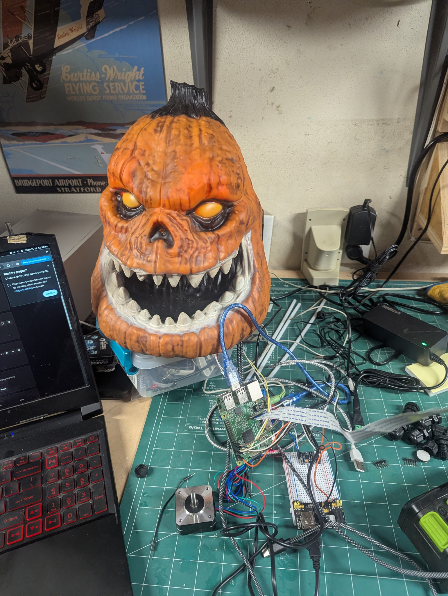

PumpkinHead (2026)

An animatronic pumpkin with a browser-based control station. The Pi drives PWM-dimmed LED eyes, an H-bridge jaw with a center-position switch, and a stepper-driven candy dispenser on a separate four-axis motor board over a tagged serial protocol. The operator sees and hears through the pumpkin's camera and talks through it with a real-time voice changer and syllable-timed lip-sync.
Built as an experiment in ARP 4754-style development with AI: system and interface definition first, then requirements, then implementation and verification. Implementation used Claude as a tool, with requirements and tests as the check on its output.